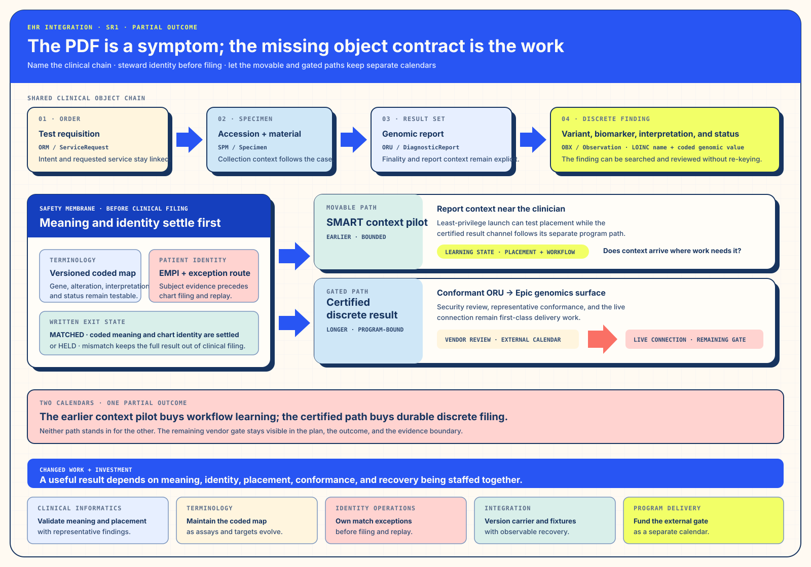

Track ISolution Architecture · Purpose and Changed WorkName the clinical contract before choosing its carrier.
I. Solution Architecture — Name the clinical contract before the carrier
§a Debrief — The PDF Was the Symptom
The request sounded like procurement: choose an Epic integration and deliver discrete genomic results. The design problem was agreement. The laboratory and the EHR had different names, state expectations, and identity handles for the same order, specimen, report, finding, and patient. The attachment preserved document fidelity while leaving each discrete finding unavailable to downstream search, decision support, and cohort work.
A clinician opening a PDF was therefore performing an undocumented translation at the point of care. That work joined molecular meaning, chart identity, and workflow timing under clinical pressure.
§b Bottleneck — Meaning, Identity, and an External Calendar
§c Intervention — A Hybrid, Named-First Delivery Shape
The delivery shape separates what must be stable from what can move in parallel. A canonical result contract binds the order, patient, report, and discrete findings. A coded HL7v2 ORU/OBX channel carries the result into the receiving genomics workflow. An identity service resolves the patient before filing. A light SMART on FHIR application can put report context near the clinician while the certified discrete channel proceeds through its longer vendor path.


§d Outcome — Discrete Use with a Remaining Gate
The useful result is a discrete finding that can be searched, reviewed, and carried into later clinical workflow without re-keying. The partial result matters equally: a point-of-care application can move earlier, while the certified discrete connection remains dependent on review and live-connection timing. The plan becomes stronger when those two paths are treated as different investments rather than one promised date.
§e Repeatability — Pilot the Movable Application While the Gate Runs
Name the shared objects first. Treat semantics and identity as clinical-safety infrastructure. Run the vendor-program calendar beside the build calendar. Use an earlier, bounded application to learn about clinical placement while the certified result channel completes its separate path.